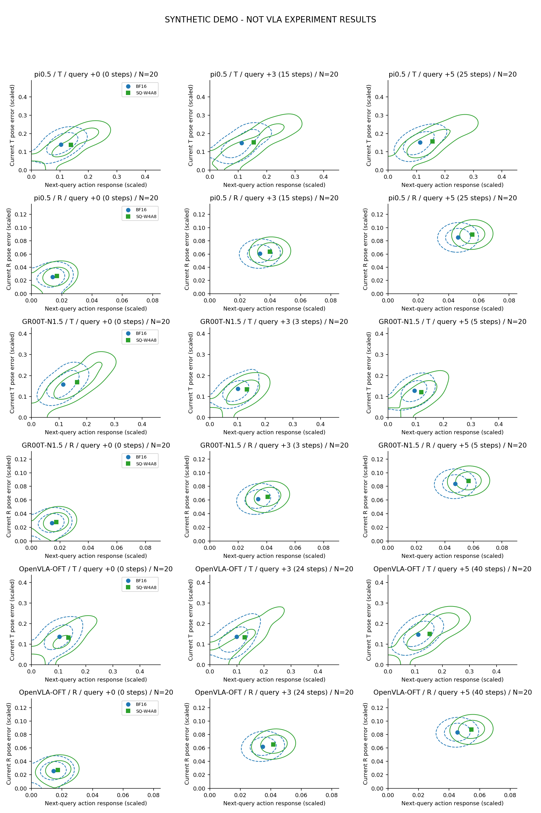
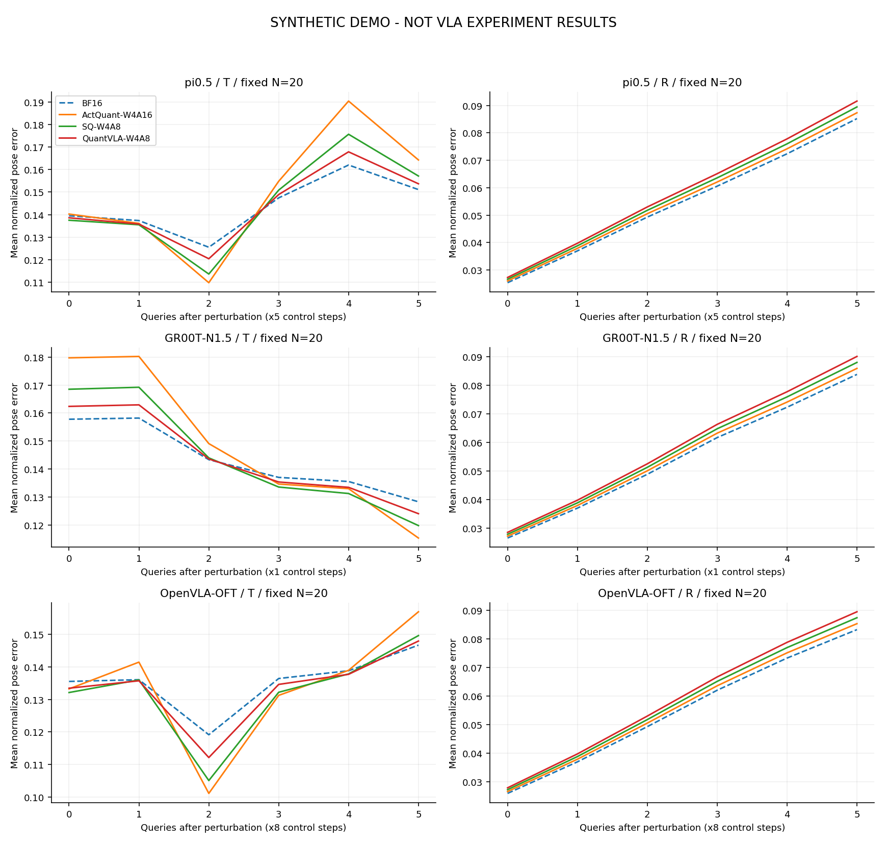
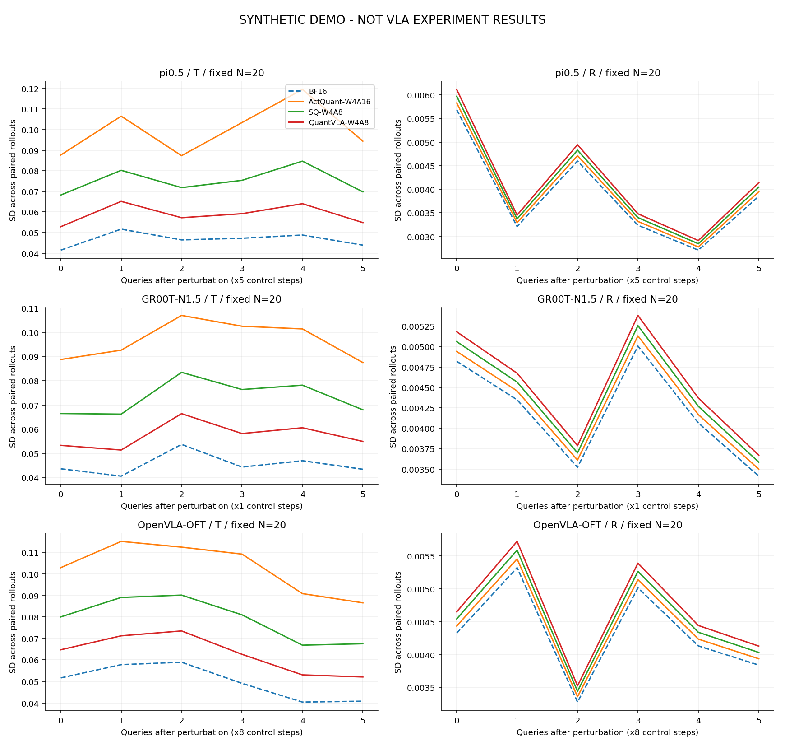
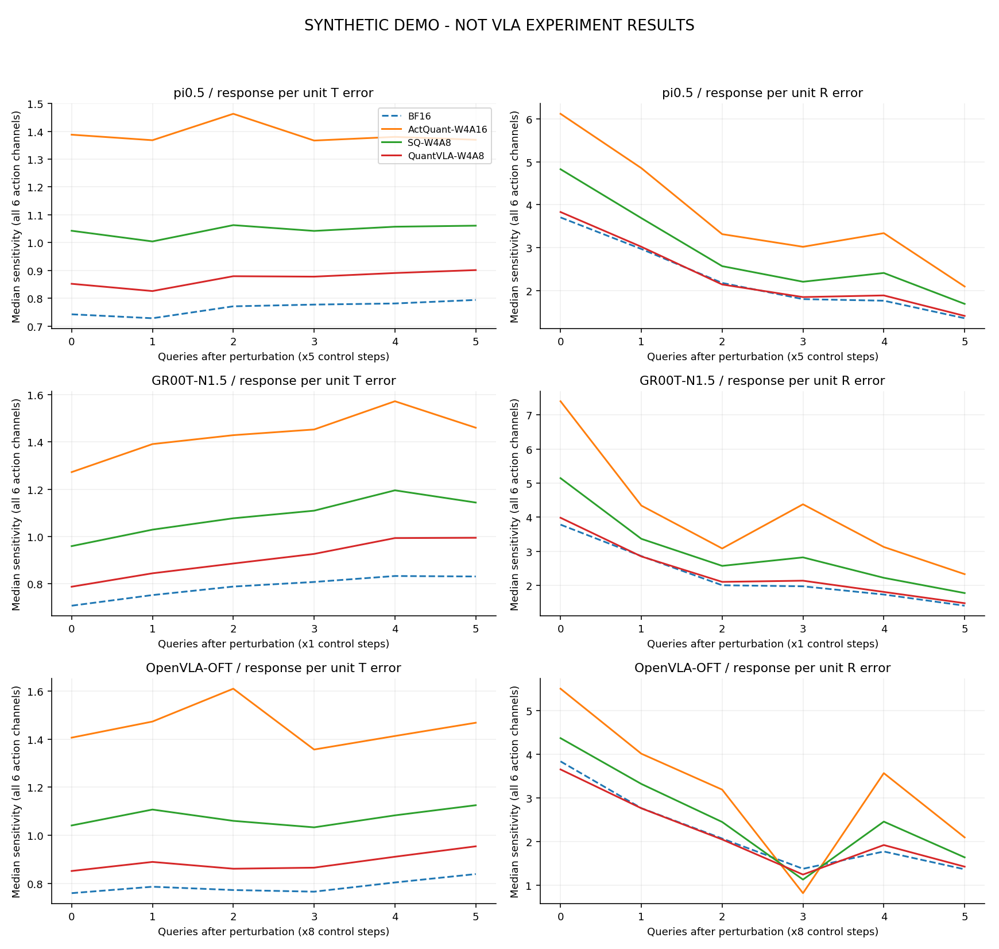
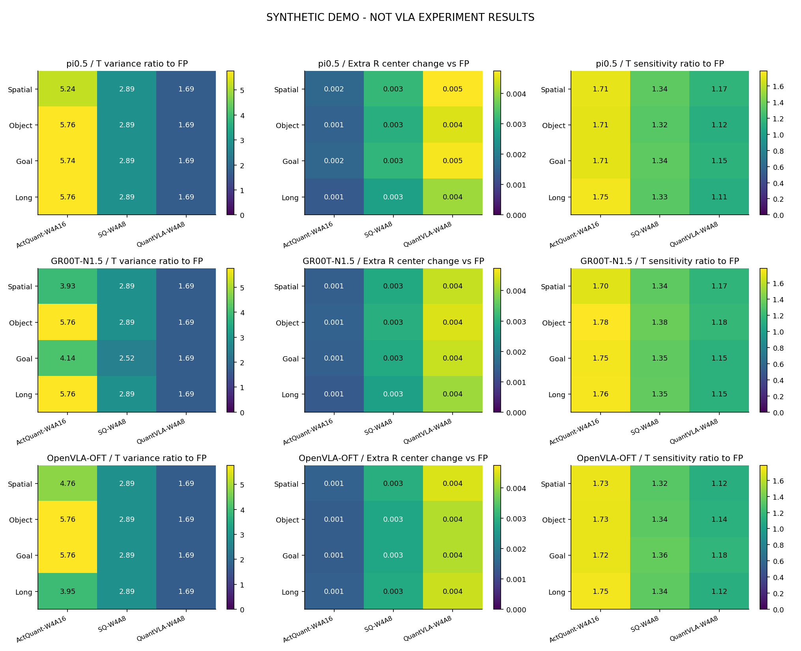
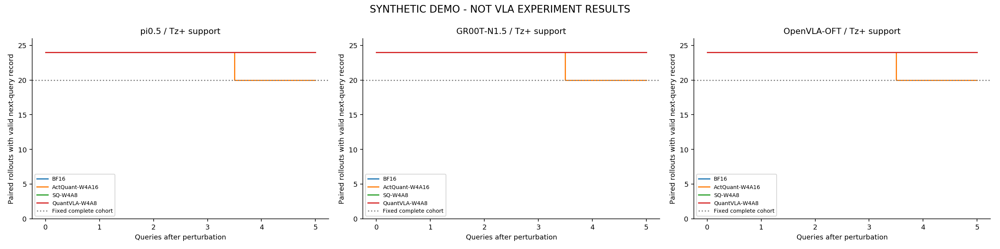

OpenVLA-OFT独立六组图
跨模型、跨方法的运行时误差共性
实线/方形为量化，虚线/圆形为BF16。每组均比较同精度的扰动分支与无扰动分支。三个模型的原生query跨度分别为5/1/8控制步，按模型分面，不混合计算。固定完整cohort与可用样本数同时报告。
当前展示方向：Tz+ / Rz+；负向扰动必须另生成对照，不能合并抵消。

同一坐标范围和带宽比较早中晚联合分布；点为原始样本均值，等高线为密度峰值的25%/60%，不是置信区间。
中心是否逐步移动？位置差范数和姿态差角分别展示，不能由范数推断有符号漂移方向。
不同配对轨迹之间的离散度是否放大？这不是一条轨迹内滑窗波动。
当前位姿误差对应下一次查询的六维动作响应；近零误差不计算比值。
各suite和模型中的效应是否同向？旋转格为量化的中心变化减去BF16中心变化；缺失不补零。
同时保留逐查询风险集与跨方法/时间的固定完整样本集，避免后期样本选择被隐藏。